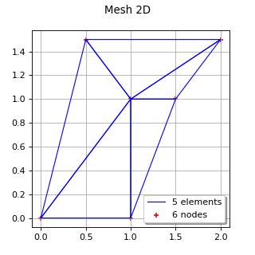

Mesh¶
(Source code, png, hires.png, pdf)

- class Mesh(*args)¶
Mesh.
- Available constructors:
Mesh(dim=1)
Mesh(vertices)
Mesh(vertices, simplices, checkValidity)
- Parameters:
- dimint,

The dimension of the vertices. By default, it creates only one vertex of dimension
 with components equal to 0.
with components equal to 0.- vertices2-d sequence of float
Vertices’ coordinates in .
- simplices2-d sequence of int
List of simplices defining the topology of the mesh. The simplex connects the vertices of indices in . In dimension 1, a simplex is an interval ; in dimension 2, it is a triangle .
- checkMeshValiditybool
Tells if we should check if mesh is valid i.e. if there is non-overlapping simplices, no unused vertex, no simplices with duplicate vertices and no coincident vertices. Default value is set to false in resource map key Mesh-CheckValidity
- dimint,
See also
Examples
>>> import openturns as ot >>> # Define the vertices of the mesh >>> vertices = [[0.0, 0.0], [1.0, 0.0], [1.0, 1.0], [1.5, 1.0]] >>> # Define the simplices of the mesh >>> simplices = [[0, 1, 2], [1, 2, 3]] >>> # Create the mesh of dimension 2 >>> mesh2d = ot.Mesh(vertices, simplices)
Methods
ImportFromMSHFile(fileName)Import mesh from FreeFem 2-d mesh files.
checkPointInSimplexWithCoordinates(point, index)Check if a point is inside a simplex and returns its barycentric coordinates.
Compute the P1 Lagrange finite element gram matrix of the mesh.
Compute the volume of all simplices.
Compute an approximation of an integral defined over the mesh.
draw()Draw the mesh.
draw1D()Draw the mesh of dimension 1.
draw2D()Draw the mesh of dimension 2.
draw3D(*args)Draw the bidimensional projection of the mesh.
exportToVTKFile(*args)Export the mesh to a VTK file.
Make all the simplices positively oriented.
Accessor to the object's name.
Description accessor.
Dimension accessor.
getId()Accessor to the object's id.
Lower bound accessor.
getName()Accessor to the object's name.
Accessor to the object's shadowed id.
getSimplex(index)Get the simplex of a given index.
Get the simplices of the mesh.
Get the number of simplices of the mesh.
Upper bound accessor.
getVertex(index)Get the vertex of a given index.
Get the vertices of the mesh.
Get the number of vertices of the mesh.
Accessor to the object's visibility state.
Get the volume of the mesh.
hasName()Test if the object is named.
Test if the object has a distinguishable name.
isEmpty()Check whether the mesh is empty.
Check if the mesh is numerically empty.
Check if the mesh is regular (only for 1-d meshes).
isValid()Check the mesh validity.
setDescription(description)Description accessor.
setName(name)Accessor to the object's name.
setShadowedId(id)Accessor to the object's shadowed id.
setSimplices(simplices)Set the simplices of the mesh.
setVertex(index, vertex)Set a vertex of a given index.
setVertices(vertices)Set the vertices of the mesh.
setVisibility(visible)Accessor to the object's visibility state.
streamToVTKFormat(*args)Give a VTK representation of the mesh.
- __init__(*args)¶
- static ImportFromMSHFile(fileName)¶
Import mesh from FreeFem 2-d mesh files.
- Parameters:
- MSHFilestr
A MSH ASCII file.
- Returns:
- mesh
Mesh Mesh defined in the file MSHFile.
- mesh
- checkPointInSimplexWithCoordinates(point, index)¶
Check if a point is inside a simplex and returns its barycentric coordinates.
- Parameters:
- pointsequence of float
Point of dimension
, the dimension of the vertices of the mesh.- indexint
Integer characterizes one simplex of the mesh.
- Returns:
- isInsidebool
Flag telling whether point is inside the simplex of index index.
- coordinates
Point The barycentric coordinates of the given point wrt the vertices of the simplex.
Notes
The tolerance for the check on the barycentric coordinates can be tweaked using the key Mesh-CoordinateEpsilon.
Examples
>>> import openturns as ot >>> vertices = [[0.0, 0.0], [1.0, 0.0], [1.0, 1.0]] >>> simplex = [[0, 1, 2]] >>> mesh2d = ot.Mesh(vertices, simplex) >>> # Create a point A inside the simplex >>> pointA = [0.6, 0.3] >>> print(mesh2d.checkPointInSimplexWithCoordinates(pointA, 0)) [True, class=Point name=Unnamed dimension=3 values=[0.4,0.3,0.3]] >>> # Create a point B outside the simplex >>> pointB = [1.1, 0.6] >>> print(mesh2d.checkPointInSimplexWithCoordinates(pointB, 0)) [False, class=Point name=Unnamed dimension=3 values=[-0.1,0.5,0.6]]
- computeP1Gram()¶
Compute the P1 Lagrange finite element gram matrix of the mesh.
- Returns:
- gram
CovarianceMatrix P1 Lagrange finite element gram matrix of the mesh.
- gram
Notes
The P1 Lagrange finite element space associated to a mesh with vertices is the space of piecewise-linear functions generated by the functions , where , for and the restriction of
 to any simplex is an affine function. The vertices that are not included into at least one simplex are not taken into account.
to any simplex is an affine function. The vertices that are not included into at least one simplex are not taken into account.The gram matrix of the mesh is defined as the symmetric positive definite matrix whose generic element is given by:
This method is used in several algorithms related to stochastic process representation such as the Karhunen-Loeve decomposition.
Examples
>>> import openturns as ot >>> # Define the vertices of the mesh >>> vertices = [[0.0, 0.0], [1.0, 0.0], [1.0, 1.0], [1.5, 1.0]] >>> # Define the simplices of the mesh >>> simplices = [[0, 1, 2], [1, 2, 3]] >>> # Create the mesh of dimension 2 >>> mesh2d = ot.Mesh(vertices, simplices) >>> print(mesh2d.computeP1Gram()) [[ 0.0833333 0.0416667 0.0416667 0 ] [ 0.0416667 0.125 0.0625 0.0208333 ] [ 0.0416667 0.0625 0.125 0.0208333 ] [ 0 0.0208333 0.0208333 0.0416667 ]]
- computeSimplicesVolume()¶
Compute the volume of all simplices.
- Returns:
- volume
Point Volume of all simplices.
- volume
Examples
>>> import openturns as ot >>> vertices = [[0.0, 0.0], [1.0, 0.0], [1.0, 1.0]] >>> simplex = [[0, 1, 2]] >>> mesh2d = ot.Mesh(vertices, simplex) >>> print(mesh2d.computeSimplicesVolume()) [0.5]
- computeWeights()¶
Compute an approximation of an integral defined over the mesh.
- Returns:
- weights
Point Weights such that an integral of a function over the mesh is a weighted sum of its values at the vertices.
- weights
- draw()¶
Draw the mesh.
- Returns:
- graph
Graph If the dimension of the mesh is 1, it draws the corresponding interval, using the
draw1D()method; if the dimension is 2, it draws the triangular simplices, using thedraw2D()method; if the dimension is 3, it projects the simplices on the plane of the two first components, using thedraw3D()method with its default parameters, superposing the simplices.
- graph
- draw1D()¶
Draw the mesh of dimension 1.
- Returns:
- graph
Graph Draws the line linking the vertices of the mesh when the mesh is of dimension 1.
- graph
Examples
>>> import openturns as ot >>> from openturns.viewer import View >>> vertices = [[0.5], [1.5], [2.1], [2.7]] >>> simplices = [[0, 1], [1, 2], [2, 3]] >>> mesh1d = ot.Mesh(vertices, simplices) >>> # Create a graph >>> aGraph = mesh1d.draw1D() >>> # Draw the mesh >>> View(aGraph).show()
- draw2D()¶
Draw the mesh of dimension 2.
- Returns:
- graph
Graph Draws the edges of each simplex, when the mesh is of dimension 2.
- graph
Examples
>>> import openturns as ot >>> from openturns.viewer import View >>> vertices = [[0.0, 0.0], [1.0, 0.0], [1.0, 1.0], [1.5, 1.0]] >>> simplices = [[0, 1, 2], [1, 2, 3]] >>> mesh2d = ot.Mesh(vertices, simplices) >>> # Create a graph >>> aGraph = mesh2d.draw2D() >>> # Draw the mesh >>> View(aGraph).show()
- draw3D(*args)¶
Draw the bidimensional projection of the mesh.
- Available usages:
draw3D(drawEdge=True, thetaX=0.0, thetaY=0.0, thetaZ=0.0, shading=False, rho=1.0)
draw3D(drawEdge, rotation, shading, rho)
- Parameters:
- drawEdgebool
Tells if the edge of each simplex has to be drawn.
- thetaXfloat
Gives the value of the rotation along the X axis in radian.
- thetaYfloat
Gives the value of the rotation along the Y axis in radian.
- thetaZfloat
Gives the value of the rotation along the Z axis in radian.
- rotation
SquareMatrix Operates a rotation on the mesh before its projection of the plane of the two first components.
- shadingbool
Enables to give a visual perception of depth and orientation.
- rhofloat,
Contraction factor of the simplices. If , all the simplices are contracted and appear deconnected: some holes are created, which enables to see inside the mesh. If , the simplices keep their initial size and appear connected. If , each simplex is reduced to its gravity center.
- Returns:
- graph
Graph Draws the bidimensional projection of the mesh on the plane.
- graph
Examples
>>> import openturns as ot >>> from openturns.viewer import View >>> from math import cos, sin, pi >>> vertices = [[0.0, 0.0, 0.0], [0.0, 0.0, 1.0], [0.0, 1.0, 0.0], ... [0.0, 1.0, 1.0], [1.0, 0.0, 0.0], [1.0, 0.0, 1.0], ... [1.0, 1.0, 0.0], [1.0, 1.0, 1.0]] >>> simplices = [[0, 1, 2, 4], [3, 5, 6, 7],[1, 2, 3, 6], ... [1, 2, 4, 6], [1, 3, 5, 6], [1, 4, 5, 6]] >>> mesh3d = ot.Mesh(vertices, simplices) >>> # Create a graph >>> aGraph = mesh3d.draw3D() >>> # Draw the mesh >>> View(aGraph).show() >>> rotation = ot.SquareMatrix(3) >>> rotation[0, 0] = cos(pi / 3.0) >>> rotation[0, 1] = sin(pi / 3.0) >>> rotation[1, 0] = -sin(pi / 3.0) >>> rotation[1, 1] = cos(pi / 3.0) >>> rotation[2, 2] = 1.0 >>> # Create a graph >>> aGraph = mesh3d.draw3D(True, rotation, True, 1.0) >>> # Draw the mesh >>> View(aGraph).show()
- exportToVTKFile(*args)¶
Export the mesh to a VTK file.
- Parameters:
- myVTKFile.vtkstr
Name of the created file which contains the mesh and the associated random values that can be visualized with the open source software Paraview.
- fixOrientation()¶
Make all the simplices positively oriented.
Examples
>>> import openturns as ot >>> vertices = [[0.0, 0.0], [1.0, 0.0], [1.0, 1.0]] >>> simplex = [[0, 2, 1]] >>> mesh2d = ot.Mesh(vertices, simplex) >>> print(mesh2d) class=Mesh name=Unnamed dimension=2 vertices=class=Sample name=Unnamed implementation=class=SampleImplementation name=Unnamed size=3 dimension=2 data=[[0,0],[1,0],[1,1]] simplices=[[0,2,1]] >>> mesh2d.fixOrientation() >>> print(mesh2d) class=Mesh name=Unnamed dimension=2 vertices=class=Sample name=Unnamed implementation=class=SampleImplementation name=Unnamed size=3 dimension=2 data=[[0,0],[1,0],[1,1]] simplices=[[2,0,1]]
- getClassName()¶
Accessor to the object’s name.
- Returns:
- class_namestr
The object class name (object.__class__.__name__).
- getDescription()¶
Description accessor.
- Returns:
- description
Description Description of the vertices.
- description
Examples
>>> import openturns as ot >>> mesh = ot.Mesh() >>> vertices = ot.Sample([[0.0, 0.0], [1.0, 0.0], [1.0, 1.0]]) >>> vertices.setDescription(['X', 'Y']) >>> mesh.setVertices(vertices) >>> print(mesh.getDescription()) [X,Y]
- getDimension()¶
Dimension accessor.
- Returns:
- dimensionint
Dimension of the vertices.
- getId()¶
Accessor to the object’s id.
- Returns:
- idint
Internal unique identifier.
- getName()¶
Accessor to the object’s name.
- Returns:
- namestr
The name of the object.
- getShadowedId()¶
Accessor to the object’s shadowed id.
- Returns:
- idint
Internal unique identifier.
- getSimplex(index)¶
Get the simplex of a given index.
- Parameters:
- indexint
Index characterizing one simplex of the mesh.
- Returns:
- indices
Indices Indices defining the simplex of index index. The simplex relies the vertices of index in . In dimension 1, a simplex is an interval ; in dimension 2, it is a triangle .
- indices
Examples
>>> import openturns as ot >>> vertices = [[0.0, 0.0], [1.0, 0.0], [1.0, 1.0], [1.5, 1.0]] >>> simplices = [[0, 1, 2], [1, 2, 3]] >>> mesh2d = ot.Mesh(vertices, simplices) >>> print(mesh2d.getSimplex(0)) [0,1,2] >>> print(mesh2d.getSimplex(1)) [1,2,3]
- getSimplices()¶
Get the simplices of the mesh.
- Returns:
- indicesCollectioncollection of
Indices List of indices defining all the simplices. The simplex relies the vertices of index in . In dimension 1, a simplex is an interval ; in dimension 2, it is a triangle .
- indicesCollectioncollection of
Examples
>>> import openturns as ot >>> vertices = [[0.0, 0.0], [1.0, 0.0], [1.0, 1.0], [1.5, 1.0]] >>> simplices = [[0, 1, 2], [1, 2, 3]] >>> mesh2d = ot.Mesh(vertices, simplices) >>> print(mesh2d.getSimplices()) [[0,1,2],[1,2,3]]
- getSimplicesNumber()¶
Get the number of simplices of the mesh.
- Returns:
- numberint
Number of simplices of the mesh.
- getVertex(index)¶
Get the vertex of a given index.
- Parameters:
- indexint
Index characterizing one vertex of the mesh.
- Returns:
- vertex
Point Coordinates in of the vertex of index index, where
is the dimension of the vertices of the mesh.
- vertex
Examples
>>> import openturns as ot >>> vertices = [[0.0, 0.0], [1.0, 0.0], [1.0, 1.0]] >>> simplices = [[0, 1, 2]] >>> mesh2d = ot.Mesh(vertices, simplices) >>> print(mesh2d.getVertex(1)) [1,0] >>> print(mesh2d.getVertex(0)) [0,0]
- getVertices()¶
Get the vertices of the mesh.
- Returns:
- vertices
Sample Coordinates in of the vertices, where
is the dimension of the vertices of the mesh.
- vertices
Examples
>>> import openturns as ot >>> vertices = [[0.0, 0.0], [1.0, 0.0], [1.0, 1.0]] >>> simplices = [[0, 1, 2]] >>> mesh2d = ot.Mesh(vertices, simplices) >>> print(mesh2d.getVertices()) 0 : [ 0 0 ] 1 : [ 1 0 ] 2 : [ 1 1 ]
- getVerticesNumber()¶
Get the number of vertices of the mesh.
- Returns:
- numberint
Number of vertices of the mesh.
- getVisibility()¶
Accessor to the object’s visibility state.
- Returns:
- visiblebool
Visibility flag.
- getVolume()¶
Get the volume of the mesh.
- Returns:
- volumefloat
Geometrical volume of the mesh which is the sum of its simplices’ volumes.
Examples
>>> import openturns as ot >>> vertices = [[0.0, 0.0], [1.0, 0.0], [1.0, 1.0], [1.5, 1.0]] >>> simplices = [[0, 1, 2], [1, 2, 3]] >>> mesh2d = ot.Mesh(vertices, simplices) >>> mesh2d.getVolume() 0.75
- hasName()¶
Test if the object is named.
- Returns:
- hasNamebool
True if the name is not empty.
- hasVisibleName()¶
Test if the object has a distinguishable name.
- Returns:
- hasVisibleNamebool
True if the name is not empty and not the default one.
- isEmpty()¶
Check whether the mesh is empty.
- Returns:
- emptybool
Tells if the mesh is empty, ie if its volume is null.
- isNumericallyEmpty()¶
Check if the mesh is numerically empty.
- Returns:
- isEmptybool
Flag telling whether the mesh is numerically empty, i.e. if its numerical volume is inferior or equal to
 (defined in the
(defined in the
ResourceMap: = Domain-SmallVolume).
Examples
>>> import openturns as ot >>> vertices = [[0.0, 0.0], [1.0, 0.0], [1.0, 1.0]] >>> simplex = [[0, 1, 2]] >>> mesh2d = ot.Mesh(vertices, simplex) >>> print(mesh2d.isNumericallyEmpty()) False
- isRegular()¶
Check if the mesh is regular (only for 1-d meshes).
- Returns:
- isRegularbool
Tells if the mesh is regular or not.
Examples
>>> import openturns as ot >>> vertices = [[0.5], [1.5], [2.4], [3.5]] >>> simplices = [[0, 1], [1, 2], [2, 3]] >>> mesh1d = ot.Mesh(vertices, simplices) >>> print(mesh1d.isRegular()) False >>> vertices = [[0.5], [1.5], [2.5], [3.5]] >>> mesh1d = ot.Mesh(vertices, simplices) >>> print(mesh1d.isRegular()) True
- isValid()¶
Check the mesh validity.
- Returns:
- validitybool
Tells if the mesh is valid i.e. if there is non-overlaping simplices, no unused vertex, no simplices with duplicate vertices and no coincident vertices.
- setDescription(description)¶
Description accessor.
- Parameters:
- descriptionsequence of str
Description of the vertices.
Examples
>>> import openturns as ot >>> mesh = ot.Mesh() >>> vertices = ot.Sample([[0.0, 0.0], [1.0, 0.0], [1.0, 1.0]]) >>> mesh.setVertices(vertices) >>> mesh.setDescription(['X', 'Y']) >>> print(mesh.getDescription()) [X,Y]
- setName(name)¶
Accessor to the object’s name.
- Parameters:
- namestr
The name of the object.
- setShadowedId(id)¶
Accessor to the object’s shadowed id.
- Parameters:
- idint
Internal unique identifier.
- setSimplices(simplices)¶
Set the simplices of the mesh.
- Parameters:
- indices2-d sequence of int
List of indices defining all the simplices. The simplex relies the vertices of index in . In dimension 1, a simplex is an interval ; in dimension 2, it is a triangle .
Examples
>>> import openturns as ot >>> mesh = ot.Mesh() >>> simplices = [[0, 1, 2], [1, 2, 3]] >>> mesh.setSimplices(simplices)
- setVertex(index, vertex)¶
Set a vertex of a given index.
- Parameters:
- indexint
Index of the vertex to set.
- vertexsequence of float
Cordinates in of the vertex of index index, where
is the dimension of the vertices of the mesh.
Examples
>>> import openturns as ot >>> vertices = [[0.0, 0.0], [1.0, 0.0], [1.0, 1.0]] >>> simplices = [[0, 1, 2]] >>> mesh = ot.Mesh(vertices, simplices) >>> vertex = [0.0, 0.5] >>> mesh.setVertex(0, vertex) >>> print(mesh.getVertices()) 0 : [ 0 0.5 ] 1 : [ 1 0 ] 2 : [ 1 1 ]
- setVertices(vertices)¶
Set the vertices of the mesh.
- Parameters:
- vertices2-d sequence of float
Cordinates in of the vertices, where
is the dimension of the vertices of the mesh.
Examples
>>> import openturns as ot >>> mesh = ot.Mesh() >>> vertices = [[0.0, 0.0], [1.0, 0.0], [1.0, 1.0]] >>> mesh.setVertices(vertices)
- setVisibility(visible)¶
Accessor to the object’s visibility state.
- Parameters:
- visiblebool
Visibility flag.
- streamToVTKFormat(*args)¶
Give a VTK representation of the mesh.
- Returns:
- streamstr
VTK representation of the mesh.
Examples using the class¶


Kolmogorov-Smirnov : get the statistics distribution


Create a gaussian process from a cov. model using HMatrix


Create a process from random vectors and processes

Sample trajectories from a Gaussian Process with correlated outputs


Estimate Sobol indices on a field to point function


Define a function with a field output: the viscous free fall example


{kind=link}
{kind=link}